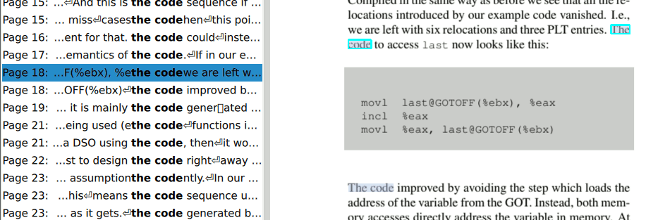

QPdfLink Class
The QPdfLink class defines a link between a region on a page (such as a hyperlink or a search result) and a destination (page, location on the page, and zoom level at which to view it). More...
| Header: | #include <QPdfLink> |
| Since: | Qt 6.4 |
Properties
|
|
Public Functions
| QPdfLink() | |
| QString | contextAfter() const |
| QString | contextBefore() const |
| void | copyToClipboard(QClipboard::Mode mode = QClipboard::Clipboard) const |
| bool | isValid() const |
| QPointF | location() const |
| int | page() const |
| QList<QRectF> | rectangles() const |
| QString | toString() const |
| QUrl | url() const |
| qreal | zoom() const |
Detailed Description
Property Documentation
[read-only] contextAfter : const QString
This property holds adjacent text found on the page after the search string. If the link is a hyperlink, this string is empty.
Access functions:
| QString | contextAfter() const |
See also QPdfSearchModel::resultsOnPage() and QPdfSearchModel::resultAtIndex().
[read-only] contextBefore : const QString
This property holds adjacent text found on the page before the search string. If the link is a hyperlink, this string is empty.
Access functions:
| QString | contextBefore() const |
See also QPdfSearchModel::resultsOnPage() and QPdfSearchModel::resultAtIndex().
[read-only] location : const QPointF
This property holds the location on the page, in units of points. If the link is a search result, it is the location where the result is found; if the link is a hyperlink, it is the destination location.
Access functions:
| QPointF | location() const |
[read-only] page : const int
This property holds the page number. If the link is a search result, it is the page number on which the result is found; if the link is a hyperlink, it is the destination page number.
Access functions:
| int | page() const |
[read-only] rectangles : const QList<QRectF>
This property holds the region (set of rectangles) occupied by the link or search result on the page where it was found. If the text wraps around to multiple lines on the page, there may be multiple rectangles:

Access functions:
| QList<QRectF> | rectangles() const |
See also QPdfSearchModel::resultsOnPage() and QPdfSearchModel::resultAtIndex().
[read-only] url : const QUrl
This property holds the destination URL if the link is an external hyperlink; otherwise, it's empty.
Access functions:
| QUrl | url() const |
[read-only] valid : const bool
This property holds whether the link is valid.
Access functions:
| bool | isValid() const |
[read-only] zoom : const qreal
This property holds the suggested magnification level, where 1.0 means default scale (1 pixel = 1 point). If the link is a search result, this value is not used.
Access functions:
| qreal | zoom() const |
Member Function Documentation
QPdfLink::QPdfLink()
Constructs an invalid Destination.
See also valid.
[invokable] void QPdfLink::copyToClipboard(QClipboard::Mode mode = QClipboard::Clipboard) const
Copies the toString() representation of the link to the system clipboard depending on the mode given.
Note: This function can be invoked via the meta-object system and from QML. See Q_INVOKABLE.
[invokable] QString QPdfLink::toString() const
Returns a translated representation for display.
Note: This function can be invoked via the meta-object system and from QML. See Q_INVOKABLE.
See also copyToClipboard().